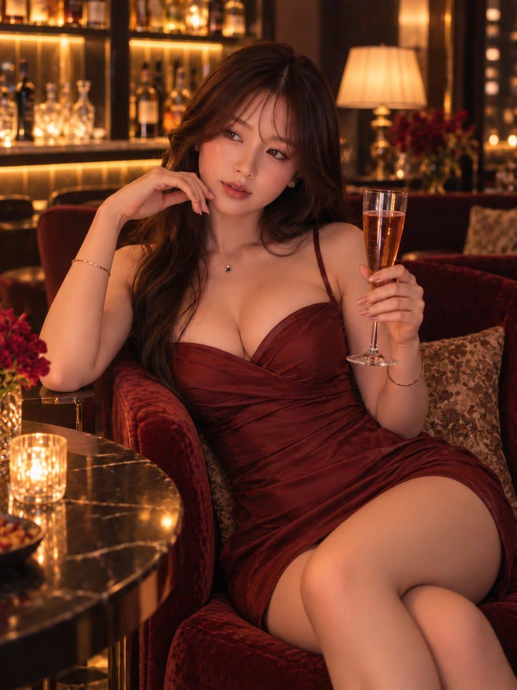

GPT Image 2 Prompt: Woman in Red Dress at Bar
WRD-010WardrobeGPT Image 2by Prompt アトリエ｜AI画像プロンプトSeptember

A detailed prompt for GPT Image 2 to generate a photorealistic portrait of a young woman in a wine-red satin dress holding a champagne glass in an upscale bar with amber lighting.
Prompt
Subject: Toast in a crimson dress Main Subject: A young woman sitting on a crimson velvet chair in an upscale, dimly lit bar in the center of the frame. The focus is on her body-hugging wine-red satin dress, the slender champagne glass in her right hand, and the amber lighting. Person & Expression: Small oval face, soft jawline, large dark brown eyes, thin eyebrows, refined nose bridge, and glossy pink lips slightly parted. Head tilted slightly to the right, gaze flowing to the left of the screen, with a calm smile. Long dark brown wavy hair parted near the center, spread over shoulders leaving thin bangs and side strands. Clothing & Pose: Short wine-red satin dress with thin shoulder straps, crossed draping covering the chest, and diagonal wrinkles from waist to thigh. Small pearl earrings, thin necklace with black stones, delicate bracelets on both wrists. Sitting deep in the chair with legs crossed, left elbow on armrest with fingertips near chin, right hand holding the stem of the glass. Background & Light: Amber shelf lighting behind with liquor bottles and glassware, fabric-shaded lamp and red flowers in the back right, crimson chairs on left and right. Black marble table in front left with candle and small plate. Warm shelf lights and lamps from left and right softly hitting face and satin, background with round bokeh. Composition & Camera: 3:4 vertical composition, frontal camera at same height as seated person, capturing knee-up portrait from top of head to crossed knees. Person large in center, glass upper right, candle lower left. Right leg cropped at bottom edge, focus on eyes and glass, bar shelves deeply blurred. Texture & Style: Photorealistic live-action photo. High-definition deep gloss of satin, velvet, marble, glass, and natural skin sheen, cinematic night scene unified by wine-red and amber colors. Negative: Change dress color and crossed legs; omit glass or bar lighting
Tags: 35mm film, portrait, 9:16 vertical